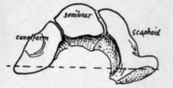
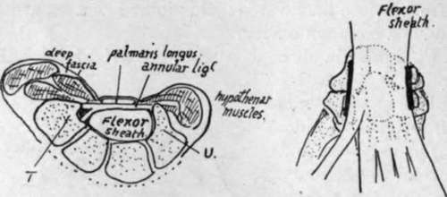
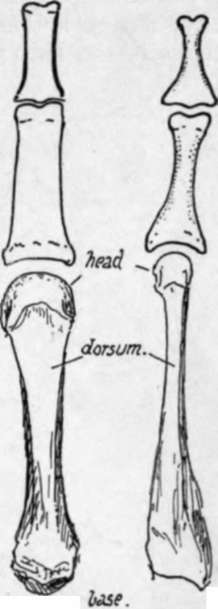

Hand. Continued
Description
This section is from the book "The Anatomy Of The Human Skeleton", by J. Ernest Frazer. Also available from Amazon: The anatomy of the human skeleton.
Hand. Continued
Lateral movement in the mid-carpal joint is quite impossible owing to the locking of the bones at the sides. The movement of the os magnum necessitates proper surfaces between the other bones of the second row and those of the first row, and we find accordingly that the curve of the head of the os magnum is carried on to the neighbouring part of the unciform, which fits into a concavity on the cuneiform, but, further in, this curve on the unciform becomes a concavity-that is, in the line of the axis of movement of the second row on the first the shape of the articulating surfaces is appropriately changed, and at the same level on the outer side a similar form of curve is formed between the scaphoid and the trapezoid and trapezium.
Fig. 83.-The bones which make the upper surface of the mid-carpal joint. The axis of movement is approximately indicated by the interrupted line.
All the bones of the carpus, with the exception of the pisiform, are affected by the anterior concavity of the whole structure, and this form is maintained by strong ligaments that are divisible into dorsal and palmar : the latter are the stronger set, as more strain is thrown on them in many of the functions of the hand, but it must not be forgotten that the anterior annular ligament, passing between the extremities of the curve, is the most effective factor in holding up the concavity of the carpus.
The bones of each row are joined together by interosseous ligaments, so that non-articular rough areas can be found on their sides, bordering on their articular surfaces, for these bands. The ligaments of the first row cut off the cavity of the radio-carpal from that of the mid-carpal joint, while this is again separated in part by the interosseous ligaments of the second row from that of the carpo-metacarpal system.
In addition to these, the bones of the lower row are joined by anterior and posterior transverse intercarpal ligaments, which also extend on to the metacarpals. The transverse fibres that cover the first row are mainly connected with the radiocarpal fibres of the wrist-joint.
The transverse fibres are partly covered in front by the radiating fibres of the ligaments that help to connect the two rows with one another. These run from the os magnum to the neighbouring bones, the scaphoid, cuneiform, unciform, trapezoid, and the four inner metacarpals : some of these fibres also reach the radius, and a band goes to the base of the styloid process of the ulna, thus not interfering with rotation of the radius and hand round that bone. These radiating fibres are continuous in part with the fibres of the anterior capsule of the wrist. The two rows of bones are also connected at their margins by internal and external lateral ligaments which are continuous with the fibres of the lateral ligaments of the wrist, and by ligamentous or tendinous bands connecting the pisiform with the hook of the unciform and with the bases of the inner two or three metacarpals.
** On the back of the carpus the first row is covered by radio-carpal bands passing downwards and inwards, and with these some fibres between scaphoid and cuneiform : some ligamentous slips from these pass to the bones of the lower row. In addition are vertical fibres between the ulna and cuneiform, and cuneiform and unciform, on the inner side, and from radius to scaphoid and scaphoid to trapezium on the outer side.
If we now analyse the carpal concavity, we see that the projection forwards on the radial side is due to the position and shape of the bones themselves, so that the trapezium and outer part of the scaphoid are turned forward, carrying the thumb in front of the rest of the metacarpus. On the inner side the cuneiform and unciform lie more in line, and the projection is brought about by the pisiform placed in front of the cuneiform and by a hook-like process-whence its name-projecting forward from the unciform. But the carpus between these margins is concave forward, so that we find the various bones have, in general, larger dorsal than palmar surfaces, a feature well exemplified in the trapezoid.
Fig. 84.-i, A scheme of a section showing how the flexor sheath occupies the carpal concavity, how the front wall of the sheath is thickened as the annular ligament, and ■how the carpal bones projecting on each side beyond the sheath are utilised and covered by thenar and hypo-thenar muscles. T. trapezium ; U. unciform. 2, Seen from the front, showing the flexor sheath lying on the carpus and metacarpus. The thick lines mark the side limits and attachments of the annular ligament: the marginal parts of the carpus project beyond these. The muscles arising from the projecting parts run down to the digits along the sides of the sheath, so that there are two side compartments and a central one for tendons and lumbricals. The superficial side muscles overlap the sheath at their origins, i.e., they arise from the annular ligament.
The flexor tendons, lying in the concavity of the carpus, are covered by the anterior annular ligament, which is a purely carpal structure and is attached to the prominent margins of the concavity-that is, it is fastened externally to the trapezium and tuberosity of scaphoid, and internally to the pisiform, hook of unciform, and piso-uncinate ligament which connects these two. When the anterior annular ligament is in position the tunnel under it is floored by the whole front surfaces of os magnum, trapezoid, and semilunar, by a large part of scaphoid, and by very small margins of trapezium, unciform and cuneiform : all these bony surfaces are of course covered by ligaments. The remainder of the trapezium and scaphoid project beyond the line of outer attachment of the hgament, and the remainder of unciform and cuneiform project beyond its inner attachment, and the projecting areas thus provided, covered by hgamentous tissue, are utilised for the origin of muscles of the thenar and hypothenar eminences respectively. The figure (Fig. 84) shows this, and likewise indicates how these muscles also arise from the annular hgament. The ligament is really the thickened front wall of the " flexor sheath," and the general structure of the palm can be understood from the figure, for it shows three compartments, a central one that is the flexor sheath, and two side ones that contain the thenar and hypothenar muscles.
On its dorsal surface the carpus is covered largely by ligaments and crossed by the posterior carpal arch and other arteries under cover of the extensor tendons running to the digits and metacarpus. These tendons are covered as they lie on the radius by the posterior annular ligament-this is directed downwards and inwards, having no attachment to the ulna, but reaching the inner part of the carpus, to which it is attached, some of the fibres turning round this inner border to reach the pisiform and anterior annular ligament. This arrangement is in accordance with the fact that the carpus moves with the radius in supination and pronation, and any attachment to the ulna except in the axis of rotation would interfere with such movement.
The Metacarpus
Each of the five metacarpal bones has a shaft, a proximal base, and a distal head. With the exception of that of the thumb, each base presents side articulations for its neighbouring metacarpals in addition to the basal carpal facet or facets.
Each shaft is thick and strong, and, except in the thumb, widens on its dorsal aspect as it is followed to the strong, square-cut head ; this appearance of the shaft and head is one of the characters in which these bones differ from the corresponding metatarsals in the foot (Fig. 85). The five bones make a radiating series with intervening spaces that are filled by the Interossei muscles which arise from the shafts of the bones.
Phalanges
All the first phalanges have oval concave facets at their proximal ends for articulation with their corresponding metacarpals : the first phalanges are the only long bones in the body that possess such facets, so that any such bone must be a first phalanx of either hand or foot (Fig. 82).
Fig. 85.-To illustrate the contrast between metacarpals and metatarsals, and between phalanges of hand and foot ; slightly exaggerated. Notice the strong shaft of the metacarpal widen -ing toward the head, which is heavy and square-cut, and compare this with the narrow, compressed shaft and head of the metatarsal, with its heavy base. The hand phalanx is broad, strong and flattened in the shaft, whereas that of the foot has a rounded feeble shaft with heavy ends.
The second phalanges all possess double facets on the proximal ends for articulation with the two " condyles " that are on the distal ends of the first phalanges, and the distal ends of the second phalanges are somewhat similarly furnished, so that the proximal ends of the third phalanges are also doubly facetted ; but the last phalanges have flat expansions at their ends that distinguish them at once-this exjp*sion supports the fibro-fatty pulp of the finger tip. The two phalanges of the thumb resemble the first and third phalanges in the other digits : the terminal phalanx probably is compounded of a true third and remnants of a second phalanx.
Continue to:
- prev: Hand
- Table of Contents
- next: Separate Bones Of Carpus